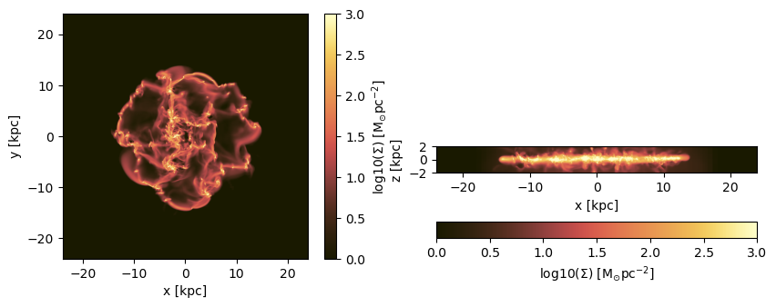
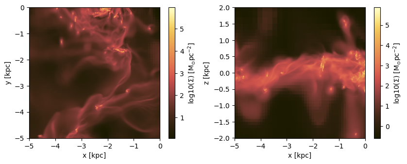
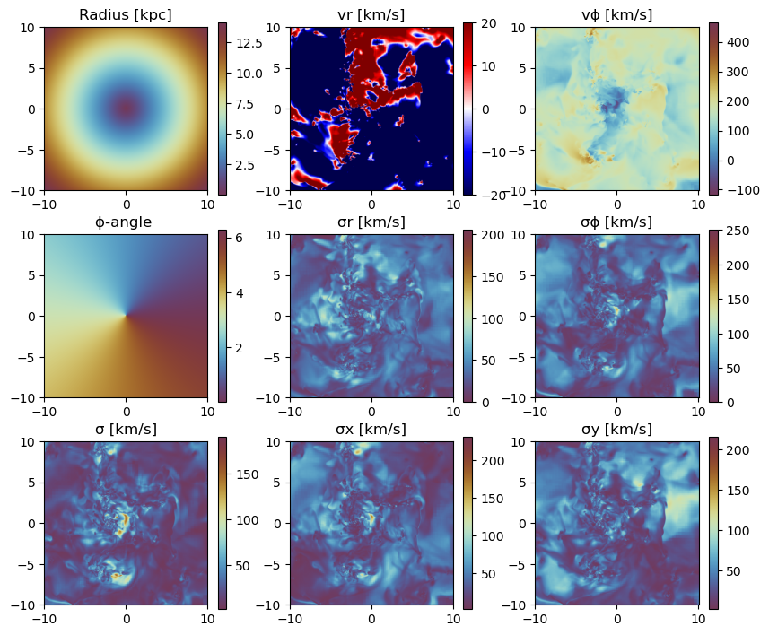
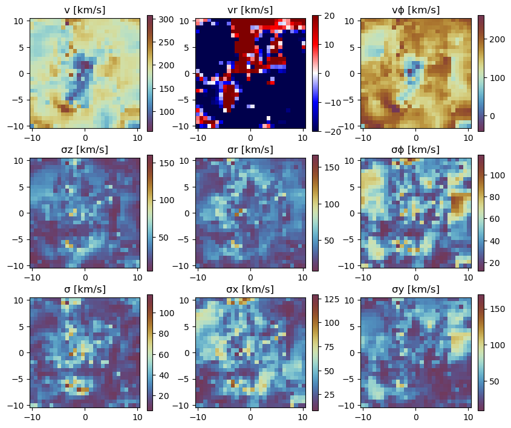
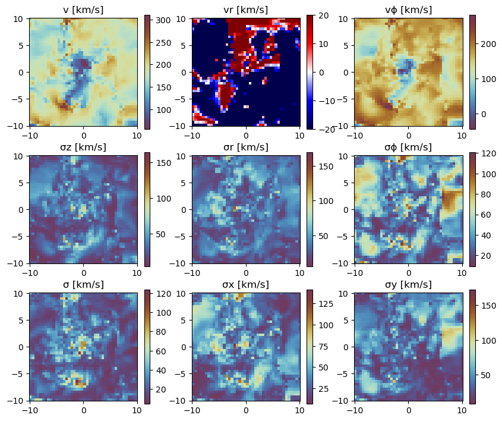
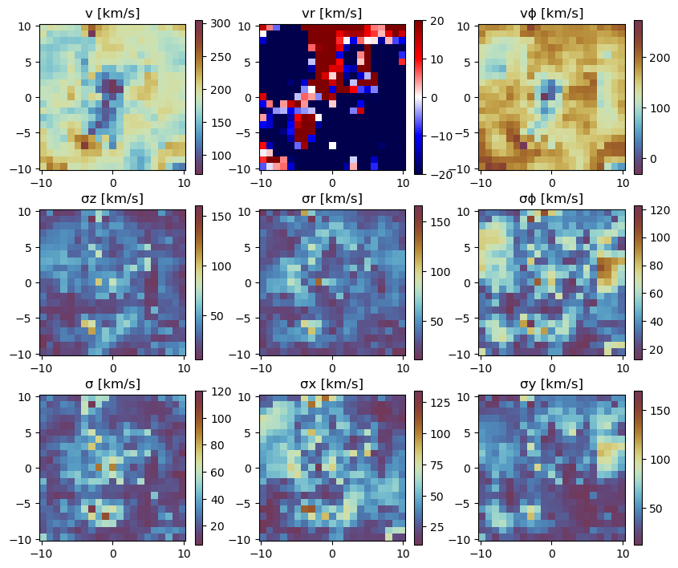
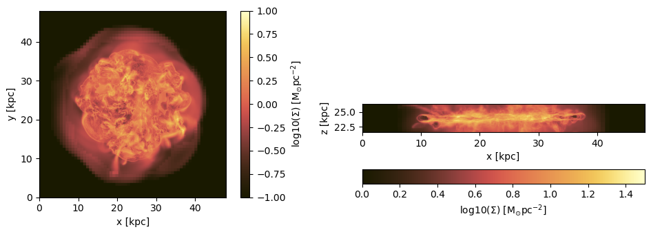
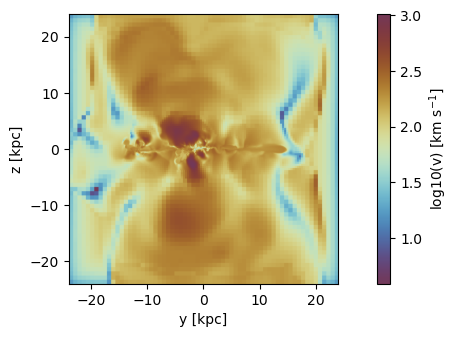

Hydro Data Projections
This tutorial demonstrates advanced projection techniques for hydrodynamical simulation data using MERA.jl. Learn how to create 2D projections from 3D data, handle different coordinate systems, and visualize complex astrophysical datasets.
Quick Reference
Essential Functions
# Basic projection
projection(data, :variable, :unit)
# Multi-quantity projection
projection(data, [:var1, :var2], units=[:unit1, :unit2])
# Spatial selection
projection(data, :sd, :Msol_pc2,
xrange=[-10,10], center=[:boxcenter], range_unit=:kpc)
# Direction control
projection(data, :sd, :Msol_pc2, direction=:x) # x, y, z directions
# Resolution control
projection(data, :sd, :Msol_pc2, lmax=8) # AMR level
projection(data, :sd, :Msol_pc2, res=256) # Effective grid resolution
projection(data, :sd, :Msol_pc2, pxsize=[100.,:pc]) # Physical pixel size
# Masking and weighting
projection(data, :sd, :Msol_pc2, mask=mask_array)
projection(data, :rho, :g_cm3, weighting=[:volume])Key Projection Quantities
:sd- Surface density (Σ):vx, :vy, :vz- Velocity components:v- Total velocity magnitude:σ, :σx, :σy, :σz- Velocity dispersions:cs- Sound speed:r_cylinder, :vr_cylinder, :vϕ_cylinder:ϕ, :σr_cylinder, :σϕ_cylinder
Overview
MERA.jl provides powerful projection capabilities for analyzing hydrodynamical simulations:
- Surface density projections in arbitrary directions
- Kinematic analysis with velocity fields and dispersions
- Multi-quantity projections with customizable units
- Coordinate system transformations (Cartesian, cylindrical, spherical)
- Advanced masking and filtering for targeted analysis
Key Concepts
- Projection Direction: Control viewing angle (x, y, z directions)
- Grid Resolution: Customize output resolution via
lmax,res, orpxsize - Weighting Schemes: Mass-weighted, volume-weighted, or custom weighting
- Coordinate Systems: Native Cartesian or derived cylindrical/spherical coordinates
Environment Setup and Data Loading
Package Configuration
First, we configure the development environment and load the required packages for this tutorial.
using Mera
# Load simulation metadata
# Replace with your simulation path and output number
info = getinfo(400, "/Volumes/FASTStorage/Simulations/Mera-Tests/manu_sim_sf_L14")
# Load hydrodynamical data with specified constraints
# smallr: sets minimum density value in loaded data, lmax: maximum level to load
gas = gethydro(info, smallr=1e-11, lmax=12);[Mera]: 2025-08-14T14:56:54.147
Code: RAMSES
output [400] summary:
mtime: 2018-09-05T09:51:55
ctime: 2025-06-29T20:06:45.267
=======================================================
simulation time: 594.98 [Myr]
boxlen: 48.0 [kpc]
ncpu: 2048
ndim: 3
-------------------------------------------------------
amr: true
level(s): 6 - 14 --> cellsize(s): 750.0 [pc] - 2.93 [pc]
-------------------------------------------------------
hydro: true
hydro-variables: 7 --> (:rho, :vx, :vy, :vz, :p, :var6, :var7)
hydro-descriptor: (:density, :velocity_x, :velocity_y, :velocity_z, :thermal_pressure, :passive_scalar_1, :passive_scalar_2)
γ: 1.6667
-------------------------------------------------------
gravity: true
gravity-variables: (:epot, :ax, :ay, :az)
-------------------------------------------------------
particles: true
- Npart: 5.091500e+05
- Nstars: 5.066030e+05
- Ndm: 2.547000e+03
particle-variables: 5 --> (:vx, :vy, :vz, :mass, :birth)
-------------------------------------------------------
rt: false
-------------------------------------------------------
clumps: true
clump-variables: (:index, :lev, :parent, :ncell, :peak_x, :peak_y, :peak_z, Symbol("rho-"), Symbol("rho+"), :rho_av, :mass_cl, :relevance)
-------------------------------------------------------
namelist-file: false
timer-file: false
compilation-file: true
makefile: true
patchfile: true
=======================================================
[Mera]: Get hydro data: 2025-08-14T14:56:56.389
Key vars=(:level, :cx, :cy, :cz)
Using var(s)=(1, 2, 3, 4, 5, 6, 7) = (:rho, :vx, :vy, :vz, :p, :var6, :var7)
domain:
xmin::xmax: 0.0 :: 1.0 ==> 0.0 [kpc] :: 48.0 [kpc]
ymin::ymax: 0.0 :: 1.0 ==> 0.0 [kpc] :: 48.0 [kpc]
zmin::zmax: 0.0 :: 1.0 ==> 0.0 [kpc] :: 48.0 [kpc]
📊 Processing Configuration:
Total CPU files available: 2048
Files to be processed: 2048
Compute threads: 8
GC threads: 4
Processing files: 100%|██████████████████████████████████████████████████| Time: 0:01:08 (33.26 ms/it)
✓ File processing complete! Combining results...
✓ Data combination complete!
Final data size: 18966620 cells, 7 variables
Creating Table from 18966620 cells with max 8 threads...
Threading: 8 threads for 11 columns
Max threads requested: 8
Available threads: 8
Using parallel processing with 8 threads
Creating IndexedTable with 11 columns...
17.532129 seconds (500.23 M allocations: 19.436 GiB, 5.14% gc time, 5.19% compilation time)
✓ Table created in 17.719 seconds
Memory used for data table :1.5544367535039783 GB
-------------------------------------------------------
# Inspect the loaded hydro data structure
# This shows the available fields and data organization
gas.dataTable with 18966620 rows, 11 columns:
Columns:
# colname type
────────────────────
1 level Int64
2 cx Int64
3 cy Int64
4 cz Int64
5 rho Float64
6 vx Float64
7 vy Float64
8 vz Float64
9 p Float64
10 var6 Float64
11 var7 Float64Basic Projections
Available Projection Quantities
MERA.jl provides numerous predefined quantities for projection analysis. Understanding available options helps select appropriate variables for your scientific goals.
The projection() function without arguments displays all available projection quantities. This includes fundamental physical properties, derived quantities, and coordinate system transformations:
# Display all available projection quantities and their symbols
projection()Predefined vars for projections:
------------------------------------------------
=====================[gas]:=====================
-all the non derived hydro vars-
:cpu, :level, :rho, :cx, :cy, :cz, :vx, :vy, :vz, :p, var6,...
further possibilities: :rho, :density, :ρ
-derived hydro vars-
:x, :y, :z
:sd or :Σ or :surfacedensity
:mass, :cellsize, :freefall_time
:cs, :mach, :machx, :machy, :machz, :jeanslength, :jeansnumber
:t, :Temp, :Temperature with p/rho
==================[particles]:==================
all the non derived vars:
:cpu, :level, :id, :family, :tag
:x, :y, :z, :vx, :vy, :vz, :mass, :birth, :metal....
-derived particle vars-
:age
==============[gas or particles]:===============
:v, :ekin
squared => :vx2, :vy2, :vz2
velocity dispersion => σx, σy, σz, σ
related to a given center:
---------------------------
:vr_cylinder, vr_sphere (radial components)
:vϕ_cylinder, :vθ
squared => :vr_cylinder2, :vϕ_cylinder2
velocity dispersion => σr_cylinder, σϕ_cylinder
2d maps (not projected) => :r_cylinder, :ϕ
------------------------------------------------
Single Quantity Projections
Directional Projections (z, y, x)
Surface density projections integrate mass along a chosen axis, creating 2D maps that reveal structure and distribution patterns.
Key Parameters:
- Variable Selection:
:sd(surface density) symbol for projection quantity - Unit Specification:
:Msol_pc2for solar masses per square parsec - Range Control:
zrangedefines integration depth along projection axis - Threading:
verbose_threads=trueshows parallel processing information
Technical Notes:
- Default projection direction is z-axis (viewing from above)
- Grid resolution matches maximum loaded refinement level
- Mass-weighted integration by default for surface density
# Z-direction projection (view from above)
# Integrates mass along z-axis: Σ(x,y) = ∫ ρ(x,y,z) dz
proj_z = projection(gas, :sd, unit=:Msol_pc2, zrange=[0.45,0.55], verbose_threads=true)
# Alternative syntax: omit 'unit' keyword if order is preserved
proj_z = projection(gas, :sd, :Msol_pc2, zrange=[0.45,0.55], verbose=false)
# X-direction projection (side view)
# Integrates mass along x-axis: Σ(y,z) = ∫ ρ(x,y,z) dx
# Shows structure when viewed from the side
proj_x = projection(gas, :sd, :Msol_pc2, direction=:x, zrange=[0.45,0.55], verbose=false);[Mera]: 2025-08-14T14:58:28.184
domain:
xmin::xmax: 0.0 :: 1.0 ==> 0.0 [kpc] :: 48.0 [kpc]
ymin::ymax: 0.0 :: 1.0 ==> 0.0 [kpc] :: 48.0 [kpc]
zmin::zmax: 0.45 :: 0.55 ==> 21.6 [kpc] :: 26.4 [kpc]
Selected var(s)=(:sd,)
Weighting = :mass
Effective resolution: 4096^2
Map size: 4096 x 4096
Pixel size: 11.719 [pc]
Simulation min.: 11.719 [pc]
Available threads: 8
Requested max_threads: 8
Variables: 1 (sd)
Processing mode: Sequential (single thread)
ℹ️ Sequential: Insufficient variables (1 < 2)
Progress: 100%|█████████████████████████████████████████| Time: 0:00:03
Progress: 100%|█████████████████████████████████████████| Time: 0:00:03
Progress: 100%|█████████████████████████████████████████| Time: 0:00:03
Spatial Range Selection
Control the spatial region for projection analysis by specifying coordinate ranges relative to a chosen center point. This enables focused analysis of specific structures or regions of interest.
# Define center point: box center in physical units
cv = (gas.boxlen / 2.) * gas.scale.kpc # Convert to kpc
# Project specific spatial region around center
proj_z = projection(gas, :sd, :Msol_pc2,
xrange=[-10.,10.], # ±10 kpc in x-direction
yrange=[-10.,10.], # ±10 kpc in y-direction
zrange=[-2.,2.], # ±2 kpc integration depth
center=[cv,cv,cv], # Center at box center
range_unit=:kpc); # Specify range units[Mera]: 2025-08-14T14:58:43.535
center: [0.5, 0.5, 0.5] ==> [24.0 [kpc] :: 24.0 [kpc] :: 24.0 [kpc]]
domain:
xmin::xmax: 0.2916667 :: 0.7083333 ==> 14.0 [kpc] :: 34.0 [kpc]
ymin::ymax: 0.2916667 :: 0.7083333 ==> 14.0 [kpc] :: 34.0 [kpc]
zmin::zmax: 0.4583333 :: 0.5416667 ==> 22.0 [kpc] :: 26.0 [kpc]
Selected var(s)=(:sd,)
Weighting = :mass
Effective resolution: 4096^2
Map size: 1708 x 1708
Pixel size: 11.719 [pc]
Simulation min.: 11.719 [pc]
Available threads: 8
Requested max_threads: 8
Variables: 1 (sd)
Processing mode: Sequential (single thread)
Convenience Notation for Box Center:
Use shorthand notation :bc or :boxcenter to automatically reference the simulation box center without manual calculation:
# Use :boxcenter shorthand for automatic box center calculation
proj_z = projection(gas, :sd, :Msol_pc2,
xrange=[-10.,10.], yrange=[-10.,10.], zrange=[-2.,2.],
center=[:boxcenter], # Automatic box center
range_unit=:kpc);[Mera]: 2025-08-14T14:58:46.040
center: [0.5, 0.5, 0.5] ==> [24.0 [kpc] :: 24.0 [kpc] :: 24.0 [kpc]]
domain:
xmin::xmax: 0.2916667 :: 0.7083333 ==> 14.0 [kpc] :: 34.0 [kpc]
ymin::ymax: 0.2916667 :: 0.7083333 ==> 14.0 [kpc] :: 34.0 [kpc]
zmin::zmax: 0.4583333 :: 0.5416667 ==> 22.0 [kpc] :: 26.0 [kpc]
Selected var(s)=(:sd,)
Weighting = :mass
Effective resolution: 4096^2
Map size: 1708 x 1708
Pixel size: 11.719 [pc]
Simulation min.: 11.719 [pc]
Available threads: 8
Requested max_threads: 8
Variables: 1 (sd)
Processing mode: Sequential (single thread)
# Alternative abbreviated notation
proj_z = projection(gas, :sd, :Msol_pc2,
xrange=[-10.,10.], yrange=[-10.,10.], zrange=[-2.,2.],
center=[:bc], # :bc shorthand for box center
range_unit=:kpc);[Mera]: 2025-08-14T14:58:47.854
center: [0.5, 0.5, 0.5] ==> [24.0 [kpc] :: 24.0 [kpc] :: 24.0 [kpc]]
domain:
xmin::xmax: 0.2916667 :: 0.7083333 ==> 14.0 [kpc] :: 34.0 [kpc]
ymin::ymax: 0.2916667 :: 0.7083333 ==> 14.0 [kpc] :: 34.0 [kpc]
zmin::zmax: 0.4583333 :: 0.5416667 ==> 22.0 [kpc] :: 26.0 [kpc]
Selected var(s)=(:sd,)
Weighting = :mass
Effective resolution: 4096^2
Map size: 1708 x 1708
Pixel size: 11.719 [pc]
Simulation min.: 11.719 [pc]
Available threads: 8
Requested max_threads: 8
Variables: 1 (sd)
Processing mode: Sequential (single thread)
Dimension-Specific Center Control:
Apply box center notation to individual spatial dimensions while specifying custom values for others:
# Mixed center specification: box center for x,z; custom value for y
proj_z = projection(gas, :sd, :Msol_pc2,
xrange=[-10.,10.], yrange=[-10.,10.], zrange=[-2.,2.],
center=[:bc, 24., :bc], # [x_center, y_center, z_center]
range_unit=:kpc);[Mera]: 2025-08-14T14:58:50.274
center: [0.5, 0.5, 0.5] ==> [24.0 [kpc] :: 24.0 [kpc] :: 24.0 [kpc]]
domain:
xmin::xmax: 0.2916667 :: 0.7083333 ==> 14.0 [kpc] :: 34.0 [kpc]
ymin::ymax: 0.2916667 :: 0.7083333 ==> 14.0 [kpc] :: 34.0 [kpc]
zmin::zmax: 0.4583333 :: 0.5416667 ==> 22.0 [kpc] :: 26.0 [kpc]
Selected var(s)=(:sd,)
Weighting = :mass
Effective resolution: 4096^2
Map size: 1708 x 1708
Pixel size: 11.719 [pc]
Simulation min.: 11.719 [pc]
Available threads: 8
Requested max_threads: 8
Variables: 1 (sd)
Processing mode: Sequential (single thread)
Multi-Quantity Projections
Single Quantity Arrays
Efficiently compute multiple projections in a single function call by passing arrays of quantities and units. This approach optimizes performance and ensures consistent spatial sampling across all requested variables.
Syntax Requirements:
- Variables: Array format
[:var1, :var2, ...]for multiple quantities - Units: Plural keyword
units=(notunit=) for array specification - Consistency: Each variable requires corresponding unit specification
# Single quantity in array format (demonstrates array syntax)
proj1_x = projection(gas, [:sd], # Single variable in array
units=[:Msol_pc2], # Corresponding unit array
direction=:x, # X-direction projection
xrange=[-10.,10.],
yrange=[-10.,10.],
zrange=[-2.,2.],
center=[24.,24.,24.], # Custom center coordinates
range_unit=:kpc);[Mera]: 2025-08-14T14:58:52.746
center: [0.5, 0.5, 0.5] ==> [24.0 [kpc] :: 24.0 [kpc] :: 24.0 [kpc]]
domain:
xmin::xmax: 0.2916667 :: 0.7083333 ==> 14.0 [kpc] :: 34.0 [kpc]
ymin::ymax: 0.2916667 :: 0.7083333 ==> 14.0 [kpc] :: 34.0 [kpc]
zmin::zmax: 0.4583333 :: 0.5416667 ==> 22.0 [kpc] :: 26.0 [kpc]
Selected var(s)=(:sd,)
Weighting = :mass
Effective resolution: 4096^2
Map size: 1708 x 342
Pixel size: 11.719 [pc]
Simulation min.: 11.719 [pc]
Available threads: 8
Requested max_threads: 8
Variables: 1 (sd)
Processing mode: Sequential (single thread)
Multiple Quantities with Different Units
Combine different physical quantities in a single projection call, each with appropriate units:
# Multiple quantities with different units
proj1_z = projection(gas, [:sd, :vx], # Surface density + x-velocity
units=[:Msol_pc2, :km_s], # Different units for each
direction=:x, # X-direction view
xrange=[-10.,10.],
yrange=[-10.,10.],
zrange=[-2.,2.],
center=[24.,24.,24.],
range_unit=:kpc);[Mera]: 2025-08-14T14:58:54.338
center: [0.5, 0.5, 0.5] ==> [24.0 [kpc] :: 24.0 [kpc] :: 24.0 [kpc]]
domain:
xmin::xmax: 0.2916667 :: 0.7083333 ==> 14.0 [kpc] :: 34.0 [kpc]
ymin::ymax: 0.2916667 :: 0.7083333 ==> 14.0 [kpc] :: 34.0 [kpc]
zmin::zmax: 0.4583333 :: 0.5416667 ==> 22.0 [kpc] :: 26.0 [kpc]
Selected var(s)=(:sd, :vx)
Weighting = :mass
Effective resolution: 4096^2
Map size: 1708 x 342
Pixel size: 11.719 [pc]
Simulation min.: 11.719 [pc]
Available threads: 8
Requested max_threads: 8
Variables: 2 (sd, vx)
Processing mode: Variable-based parallel (2 threads)
Positional Argument Syntax
Streamline function calls by using positional arguments in the correct order: dataobject, variables, units:
# Positional arguments: data, variables, units (keywords follow)
proj1_z = projection(gas, [:sd, :vx], [:Msol_pc2, :km_s], # Required positional args
direction=:x, # Optional keywords
xrange=[-10.,10.],
yrange=[-10.,10.],
zrange=[-2.,2.],
center=[24.,24.,24.],
range_unit=:kpc);[Mera]: 2025-08-14T14:58:56.206
center: [0.5, 0.5, 0.5] ==> [24.0 [kpc] :: 24.0 [kpc] :: 24.0 [kpc]]
domain:
xmin::xmax: 0.2916667 :: 0.7083333 ==> 14.0 [kpc] :: 34.0 [kpc]
ymin::ymax: 0.2916667 :: 0.7083333 ==> 14.0 [kpc] :: 34.0 [kpc]
zmin::zmax: 0.4583333 :: 0.5416667 ==> 22.0 [kpc] :: 26.0 [kpc]
Selected var(s)=(:sd, :vx)
Weighting = :mass
Effective resolution: 4096^2
Map size: 1708 x 342
Pixel size: 11.719 [pc]
Simulation min.: 11.719 [pc]
Available threads: 8
Requested max_threads: 8
Variables: 2 (sd, vx)
Processing mode: Variable-based parallel (2 threads)
Uniform Units for Multiple Quantities
When all quantities share the same unit, use single unit specification rather than array format:
# All velocity components with uniform units
projvel_z = projection(gas, [:vx, :vy, :vz], # Velocity components
:km_s, # Single unit for all
xrange=[-10.,10.],
yrange=[-10.,10.],
zrange=[-2.,2.],
center=[24.,24.,24.],
range_unit=:kpc);[Mera]: 2025-08-14T14:58:57.869
center: [0.5, 0.5, 0.5] ==> [24.0 [kpc] :: 24.0 [kpc] :: 24.0 [kpc]]
domain:
xmin::xmax: 0.2916667 :: 0.7083333 ==> 14.0 [kpc] :: 34.0 [kpc]
ymin::ymax: 0.2916667 :: 0.7083333 ==> 14.0 [kpc] :: 34.0 [kpc]
zmin::zmax: 0.4583333 :: 0.5416667 ==> 22.0 [kpc] :: 26.0 [kpc]
Selected var(s)=(:vx, :vy, :vz, :sd)
Weighting = :mass
Effective resolution: 4096^2
Map size: 1708 x 1708
Pixel size: 11.719 [pc]
Simulation min.: 11.719 [pc]
Available threads: 8
Requested max_threads: 8
Variables: 4 (sd, vx, vy, vz)
Processing mode: Variable-based parallel (4 threads)
Projection Output Structure
Data Organization and Access
Projection results are stored in a structured object containing 2D maps, metadata, and spatial information. Understanding this organization enables efficient data access and further analysis.
Object Properties
Examine the structure of projection output objects:
# List all available fields in the projection object
propertynames(proj1_z)(:maps, :maps_unit, :maps_lmax, :maps_weight, :maps_mode, :lmax_projected, :lmin, :lmax, :ranges, :extent, :cextent, :ratio, :effres, :pixsize, :boxlen, :smallr, :smallc, :scale, :info)Projection Maps Dictionary
The main results are stored in a dictionary structure where each key corresponds to a projected quantity:
# Access the maps dictionary containing all projected quantities
proj1_z.mapsDataStructures.SortedDict{Any, Any, Base.Order.ForwardOrdering} with 2 entries:
:sd => [2.41447 2.41447 … 3.05972 3.05972; 2.41447 2.41447 … 3.05972 3.05972;…
:vx => [48.3311 48.3311 … 35.0161 35.0161; 48.3311 48.3311 … 35.0161 35.0161;…The maps can be accessed by giving the name of the dictionary:
proj1_z.maps[:sd]1708×342 Matrix{Float64}:
2.41447 2.41447 2.41447 2.41447 … 3.05972 3.05972 3.05972 3.05972
2.41447 2.41447 2.41447 2.41447 3.05972 3.05972 3.05972 3.05972
2.41447 2.41447 2.41447 2.41447 3.05972 3.05972 3.05972 3.05972
2.41447 2.41447 2.41447 2.41447 3.05972 3.05972 3.05972 3.05972
2.41447 2.41447 2.41447 2.41447 3.05972 3.05972 3.05972 3.05972
2.4225 2.4225 2.4225 2.4225 … 3.04624 3.04624 3.04624 3.04624
2.42659 2.42659 2.42659 2.42659 3.03937 3.03937 3.03937 3.03937
2.42659 2.42659 2.42659 2.42659 3.03937 3.03937 3.03937 3.03937
2.42659 2.42659 2.42659 2.42659 3.03937 3.03937 3.03937 3.03937
2.42659 2.42659 2.42659 2.42659 3.03937 3.03937 3.03937 3.03937
2.42659 2.42659 2.42659 2.42659 … 3.03937 3.03937 3.03937 3.03937
2.42659 2.42659 2.42659 2.42659 3.03937 3.03937 3.03937 3.03937
2.42659 2.42659 2.42659 2.42659 3.03937 3.03937 3.03937 3.03937
⋮ ⋱ ⋮
5.42462 5.42462 5.42462 5.42462 2.45112 2.45112 2.45112 2.45112
5.42462 5.42462 5.42462 5.42462 2.45112 2.45112 2.45112 2.45112
5.42462 5.42462 5.42462 5.42462 2.45112 2.45112 2.45112 2.45112
5.42462 5.42462 5.42462 5.42462 2.45112 2.45112 2.45112 2.45112
5.42462 5.42462 5.42462 5.42462 … 2.45112 2.45112 2.45112 2.45112
5.42462 5.42462 5.42462 5.42462 2.45112 2.45112 2.45112 2.45112
5.50853 5.50853 5.50853 5.50853 2.44314 2.44314 2.44314 2.44314
5.67323 5.67323 5.67323 5.67323 2.42747 2.42747 2.42747 2.42747
5.67323 5.67323 5.67323 5.67323 2.42747 2.42747 2.42747 2.42747
5.67323 5.67323 5.67323 5.67323 … 2.42747 2.42747 2.42747 2.42747
5.67323 5.67323 5.67323 5.67323 2.42747 2.42747 2.42747 2.42747
5.67323 5.67323 5.67323 5.67323 2.42747 2.42747 2.42747 2.42747The units of the maps are stored in:
proj1_z.maps_unitDataStructures.SortedDict{Any, Any, Base.Order.ForwardOrdering} with 2 entries:
:sd => :Msol_pc2
:vx => :km_sProjections on a different grid size (see subject below):
proj1_z.maps_lmaxDataStructures.SortedDict{Any, Any, Base.Order.ForwardOrdering}()The following fields are helpful for further calculations or plots.
proj1_z.ranges # normalized to the domain=[0:1]6-element Vector{Float64}:
0.29166666666647767
0.7083333333328743
0.29166666666647767
0.7083333333328743
0.4583333333330363
0.5416666666663156proj1_z.extent # ranges in code units4-element Vector{Float64}:
13.9921875
34.0078125
21.99609375
26.00390625proj1_z.cextent # ranges in code units relative to a given center (by default: box center)4-element Vector{Float64}:
-10.007812500015556
10.007812499984444
-2.0039062500155556
2.0039062499844444proj1_z.ratio # the ratio between the two ranges4.994152046783626Visualization and Plotting
PyPlot Integration
MERA.jl seamlessly integrates with Python plotting libraries, providing access to sophisticated visualization capabilities through PyPlot and matplotlib.
# Prepare projections for visualization
# Z-direction: top-down view of galactic disk
proj_z = projection(gas, :sd, :Msol_pc2,
zrange=[-2.,2.], # 4 kpc integration depth
center=[:boxcenter], # Center on simulation box
range_unit=:kpc,
verbose=false)
# X-direction: edge-on view showing vertical structure
proj_x = projection(gas, :sd, :Msol_pc2,
zrange=[-2.,2.], # Same integration depth
center=[:boxcenter],
range_unit=:kpc,
verbose=false,
direction=:x);Progress: 100%|█████████████████████████████████████████| Time: 0:00:03
Progress: 100%|█████████████████████████████████████████| Time: 0:00:03
matplotlib Configuration
Configure plotting libraries and color schemes for professional scientific visualization:
using PyPlot
using ColorSchemes
# Configure scientific color schemes
cmap3 = ColorMap(ColorSchemes.Blues.colors) # Sequential blue colormap
cmap = ColorMap(ColorSchemes.lajolla.colors) # Perceptually uniform colormap
cmap2 = ColorMap(reverse(ColorSchemes.romaO.colors)) # Diverging colormap
# Note: lajolla colormap from http://www.fabiocrameri.ch/colourmaps.php
# These colormaps are designed for scientific visualizationColorMap "cm_8875344879699870350"# Create professional dual-panel figure
figure(figsize=(10, 3.5))
# Left panel: Face-on view (z-direction projection)
subplot(1,2,1)
im = imshow(log10.(permutedims(proj_z.maps[:sd])), # Transpose for correct orientation
cmap=cmap, # Apply scientific colormap
aspect=proj_z.ratio, # Maintain aspect ratio
origin="lower", # Origin at bottom-left
extent=proj_z.cextent, # Physical coordinate extent
vmin=0, vmax=3) # Set color scale limits
xlabel("x [kpc]")
ylabel("y [kpc]")
cb = colorbar(im, label=L"\mathrm{log10(\Sigma) \ [M_{\odot} pc^{-2}]}")
# Right panel: Edge-on view (x-direction projection)
subplot(1,2,2)
im = imshow(log10.(permutedims(proj_x.maps[:sd])),
cmap=cmap,
origin="lower",
extent=proj_x.cextent,
vmin=0, vmax=3)
xlabel("x [kpc]")
ylabel("z [kpc]")
cb = colorbar(im,
label=L"\mathrm{log10(\Sigma) \ [M_{\odot} pc^{-2}]}",
orientation="horizontal",
pad=0.2)
Figure(PyObject <Figure size 1000x350 with 4 Axes>)PyObject <matplotlib.colorbar.Colorbar object at 0x34858da30>proj_z = projection(gas, :sd, :Msol_pc2,
xrange=[-5,0],
yrange=[-5,0],
zrange=[-2.,2.], center=[:bc], range_unit=:kpc,
verbose=false)
proj_x = projection(gas, :sd, :Msol_pc2,
xrange=[-5,0],
yrange=[-5,0],
zrange=[-2.,2.], center=[24.,24.,24.], range_unit=:kpc,
verbose=false,
direction = :x);figure(figsize=(10, 3.5))
subplot(1,2,1)
im = imshow( log10.( permutedims(proj_z.maps[:sd])), cmap=cmap, aspect=proj_z.ratio, origin="lower", extent=proj_z.cextent) #, vmin=0, vmax=3)
xlabel("x [kpc]")
ylabel("y [kpc]")
cb = colorbar(im, label=L"\mathrm{log10(\Sigma) \ [M_{\odot} pc^{-2}]}")
subplot(1,2,2)
im = imshow( log10.( permutedims(proj_x.maps[:sd])), cmap=cmap, origin="lower", aspect=proj_x.ratio, extent=proj_x.cextent) #, vmin=0, vmax=3)
xlabel("x [kpc]")
ylabel("z [kpc]")
cb = colorbar(im, label=L"\mathrm{log10(\Sigma) \ [M_{\odot} pc^{-2}]}")
Figure(PyObject <Figure size 1000x350 with 4 Axes>)PyObject <matplotlib.colorbar.Colorbar object at 0x3485e54c0>Project a specific spatial range and plot the axes of the map relative to the box-center (given by keyword: data_center):
Advanced Kinematic Analysis
Derived Velocity and Dispersion Fields
MERA.jl computes sophisticated kinematic quantities from fundamental velocity data, enabling detailed analysis of gas dynamics and turbulence properties.
Cartesian Coordinate Velocities
Derive kinematic properties from fundamental velocity fields:
Available Quantities:
:v: Total velocity magnitude |v| = √(vₓ² + vᵧ² + vᵤ²):σ: Total velocity dispersion (3D random motion):σx, :σy, :σz: Directional velocity dispersions along coordinate axes
Technical Implementation:
- Mass-weighted projections by default
- Velocity dispersion: σₓ = √(⟨vₓ²⟩ - ⟨vₓ⟩²) following standard statistical definition
- Unicode symbols supported: use
\sigma + tabfor σ in Julia
# Project comprehensive kinematic quantities
proj_z = projection(gas, [:v, :σ, :σx, :σy, :σz], # Velocity magnitude and dispersions
:km_s, # Uniform velocity units
xrange=[-10.,10.],
yrange=[-10.,10.],
zrange=[-2.,2.],
center=[24.,24.,24.],
range_unit=:kpc);[Mera]: 2025-08-14T14:59:21.635
center: [0.5, 0.5, 0.5] ==> [24.0 [kpc] :: 24.0 [kpc] :: 24.0 [kpc]]
domain:
xmin::xmax: 0.2916667 :: 0.7083333 ==> 14.0 [kpc] :: 34.0 [kpc]
ymin::ymax: 0.2916667 :: 0.7083333 ==> 14.0 [kpc] :: 34.0 [kpc]
zmin::zmax: 0.4583333 :: 0.5416667 ==> 22.0 [kpc] :: 26.0 [kpc]
Selected var(s)=(:v, :σ, :σx, :σy, :σz, :vx, :vx2, :vy, :vy2, :vz, :vz2, :v2, :sd)
Weighting = :mass
Effective resolution: 4096^2
Map size: 1708 x 1708
Pixel size: 11.719 [pc]
Simulation min.: 11.719 [pc]
Available threads: 8
Requested max_threads: 8
Variables: 9 (sd, v, v2, vx, vx2, vy, vy2, vz, vz2)
Processing mode: Variable-based parallel (8 threads)
Velocity Dispersion Implementation
Additional intermediate maps are automatically created for velocity dispersion calculations:
Mathematical Formula: σₓ = √(⟨vₓ²⟩ - ⟨vₓ⟩²)
This requires computation of both first and second moments of the velocity distribution, stored as separate map components.
proj_z.mapsDataStructures.SortedDict{Any, Any, Base.Order.ForwardOrdering} with 13 entries:
:sd => [0.000524564 0.000524564 … 0.000462735 0.000462735; 0.000524564 0.000…
:v => [87.2263 87.2263 … 74.2532 74.2532; 87.2263 87.2263 … 74.2532 74.2532…
:v2 => [1.96323 1.96323 … 1.55066 1.55066; 1.96323 1.96323 … 1.55066 1.55066…
:vx => [0.956079 0.956079 … -0.560013 -0.560013; 0.956079 0.956079 … -0.5600…
:vx2 => [0.97878 0.97878 … 0.890713 0.890713; 0.97878 0.97878 … 0.890713 0.89…
:vy => [0.356529 0.356529 … -0.0411814 -0.0411814; 0.356529 0.356529 … -0.04…
:vy2 => [0.264853 0.264853 … 0.152368 0.152368; 0.264853 0.264853 … 0.152368 …
:vz => [-0.799307 -0.799307 … -0.296515 -0.296515; -0.799307 -0.799307 … -0.…
:vz2 => [0.719601 0.719601 … 0.50758 0.50758; 0.719601 0.719601 … 0.50758 0.5…
:σ => [28.874 28.874 … 33.9777 33.9777; 28.874 28.874 … 33.9777 33.9777; … …
:σx => [16.6789 16.6789 … 49.8155 49.8155; 16.6789 16.6789 … 49.8155 49.8155…
:σy => [24.3371 24.3371 … 25.4541 25.4541; 24.3371 24.3371 … 25.4541 25.4541…
:σz => [18.6295 18.6295 … 42.4804 42.4804; 18.6295 18.6295 … 42.4804 42.4804…proj_z.maps_unitDataStructures.SortedDict{Any, Any, Base.Order.ForwardOrdering} with 13 entries:
:sd => :standard
:v => :km_s
:v2 => :standard
:vx => :standard
:vx2 => :standard
:vy => :standard
:vy2 => :standard
:vz => :standard
:vz2 => :standard
:σ => :km_s
:σx => :km_s
:σy => :km_s
:σz => :km_susedmemory(proj_z);Memory used: 311.9 MB
figure(figsize=(10, 5.5))
subplot(2, 3, 1)
title("v [km/s]")
imshow( (permutedims(proj_z.maps[:v]) ), cmap=cmap2, origin="lower", extent=proj_z.cextent)
colorbar()
subplot(2, 3, 2)
title("σ [km/s]")
imshow( (permutedims(proj_z.maps[:σ]) ), cmap=cmap2, origin="lower", extent=proj_z.cextent)
colorbar()
subplot(2, 3, 4)
title("σx [km/s]")
imshow( (permutedims(proj_z.maps[:σx]) ), cmap=cmap2, origin="lower", extent=proj_z.cextent)
colorbar()
subplot(2, 3, 5)
title("σy [km/s]")
imshow( permutedims(proj_z.maps[:σy]) , cmap=cmap2, origin="lower", extent=proj_z.cextent)
colorbar()
subplot(2, 3, 6)
title("σz [km/s]")
imshow( permutedims(proj_z.maps[:σz]) , cmap=cmap2, origin="lower", extent=proj_z.cextent)
colorbar();
Figure(PyObject <Figure size 1000x550 with 10 Axes>)Cylindrical Coordinate System
Face-on Disk Analysis (z-direction)
For galactic disk studies, cylindrical coordinates provide natural physical interpretation. The coordinate transformation uses a specified center point for radius and azimuthal angle calculations.
# Comprehensive cylindrical coordinate analysis
proj_z = projection(gas,
# Cartesian quantities
[:v, :σ, :σx, :σy,
# Cylindrical coordinate quantities
:ϕ, :r_cylinder, :vr_cylinder, :vϕ_cylinder, :σr_cylinder, :σϕ_cylinder],
# Corresponding units
units=[:km_s, :km_s, :km_s, :km_s,
:standard, :kpc, :km_s, :km_s, :km_s, :km_s],
# Spatial selection
xrange=[-10.,10.], yrange=[-10.,10.], zrange=[-2.,2.],
center=[:boxcenter], range_unit=:kpc,
# Coordinate transformation center
data_center=[24.,24.,24.], data_center_unit=:kpc);[Mera]: 2025-08-14T14:59:29.082
center: [0.5, 0.5, 0.5] ==> [24.0 [kpc] :: 24.0 [kpc] :: 24.0 [kpc]]
domain:
xmin::xmax: 0.2916667 :: 0.7083333 ==> 14.0 [kpc] :: 34.0 [kpc]
ymin::ymax: 0.2916667 :: 0.7083333 ==> 14.0 [kpc] :: 34.0 [kpc]
zmin::zmax: 0.4583333 :: 0.5416667 ==> 22.0 [kpc] :: 26.0 [kpc]
Selected var(s)=(:v, :σ, :σx, :σy, :ϕ, :r_cylinder, :vr_cylinder, :vϕ_cylinder, :σr_cylinder, :σϕ_cylinder, :vx, :vx2, :vy, :vy2, :v2, :vr_cylinder2, :vϕ_cylinder2, :sd)
Weighting = :mass
Effective resolution: 4096^2
Map size: 1708 x 1708
Pixel size: 11.719 [pc]
Simulation min.: 11.719 [pc]
Available threads: 8
Requested max_threads: 8
Variables: 11 (sd, v, v2, vr_cylinder, vr_cylinder2, vx, vx2, vy, vy2, vϕ_cylinder, vϕ_cylinder2)
Processing mode: Variable-based parallel (8 threads)
proj_z.mapsDataStructures.SortedDict{Any, Any, Base.Order.ForwardOrdering} with 18 entries:
:r_cylinder => [14.1256 14.1173 … 14.1366 14.1449; 14.1173 14.109 … 14.1283…
:sd => [0.000524564 0.000524564 … 0.000462735 0.000462735; 0.000524…
:v => [87.2263 87.2263 … 74.2532 74.2532; 87.2263 87.2263 … 74.253…
:v2 => [1.96323 1.96323 … 1.55066 1.55066; 1.96323 1.96323 … 1.5506…
:vr_cylinder => [-60.864 -60.864 … 23.8666 23.8666; -60.864 -60.864 … 23.866…
:vr_cylinder2 => [1.05049 1.05049 … 0.620751 0.620751; 1.05049 1.05049 … 0.62…
:vx => [0.956079 0.956079 … -0.560013 -0.560013; 0.956079 0.956079 …
:vx2 => [0.97878 0.97878 … 0.890713 0.890713; 0.97878 0.97878 … 0.89…
:vy => [0.356529 0.356529 … -0.0411814 -0.0411814; 0.356529 0.35652…
:vy2 => [0.264853 0.264853 … 0.152368 0.152368; 0.264853 0.264853 … …
:vϕ_cylinder => [27.8004 27.8004 … 27.9518 27.9518; 27.8004 27.8004 … 27.951…
:vϕ_cylinder2 => [0.193141 0.193141 … 0.42233 0.42233; 0.193141 0.193141 … 0.…
:σ => [28.874 28.874 … 33.9777 33.9777; 28.874 28.874 … 33.9777 33…
:σr_cylinder => [28.5099 28.5099 … 45.8223 45.8223; 28.5099 28.5099 … 45.822…
:σx => [16.6789 16.6789 … 49.8155 49.8155; 16.6789 16.6789 … 49.815…
:σy => [24.3371 24.3371 … 25.4541 25.4541; 24.3371 24.3371 … 25.454…
:σϕ_cylinder => [7.59396 7.59396 … 32.1677 32.1677; 7.59396 7.59396 … 32.167…
:ϕ => [3.92699 3.9264 … 2.35541 2.35483; 3.92758 3.92699 … 2.35483…proj_z.maps_unitDataStructures.SortedDict{Any, Any, Base.Order.ForwardOrdering} with 18 entries:
:r_cylinder => :kpc
:sd => :standard
:v => :km_s
:v2 => :standard
:vr_cylinder => :km_s
:vr_cylinder2 => :standard
:vx => :standard
:vx2 => :standard
:vy => :standard
:vy2 => :standard
:vϕ_cylinder => :km_s
:vϕ_cylinder2 => :standard
:σ => :km_s
:σr_cylinder => :km_s
:σx => :km_s
:σy => :km_s
:σϕ_cylinder => :km_s
:ϕ => :radianfigure(figsize=(10, 8.5))
subplot(3, 3, 1)
title("Radius [kpc]")
imshow( permutedims(proj_z.maps[:r_cylinder] ), cmap=cmap2, origin="lower", extent=proj_z.cextent)
colorbar()
subplot(3, 3, 2)
title("vr [km/s]")
imshow( permutedims(proj_z.maps[:vr_cylinder] ), cmap="seismic", origin="lower", extent=proj_z.cextent, vmin=-20.,vmax=20.)
colorbar()
subplot(3, 3, 3)
title("vϕ [km/s]")
imshow( permutedims(proj_z.maps[:vϕ_cylinder] ), cmap=cmap2, origin="lower", extent=proj_z.cextent)
colorbar()
subplot(3, 3, 4)
title("ϕ-angle ")
imshow( permutedims(proj_z.maps[:ϕ]) , cmap=cmap2, origin="lower", extent=proj_z.cextent)
colorbar()
subplot(3, 3, 5)
title("σr [km/s]")
imshow( permutedims(proj_z.maps[:σr_cylinder] ), cmap=cmap2, origin="lower", extent=proj_z.cextent)
colorbar()
subplot(3, 3, 6)
title("σϕ [km/s]")
imshow( permutedims(proj_z.maps[:σϕ_cylinder] ), cmap=cmap2, origin="lower", extent=proj_z.cextent)
colorbar()
subplot(3, 3, 7)
title("σ [km/s]")
imshow( permutedims(proj_z.maps[:σ]) , cmap=cmap2, origin="lower", extent=proj_z.cextent)
colorbar()
subplot(3, 3, 8)
title("σx [km/s]")
imshow( permutedims(proj_z.maps[:σx] ), cmap=cmap2, origin="lower", extent=proj_z.cextent)
colorbar()
subplot(3, 3, 9)
title("σy [km/s]")
imshow( permutedims(proj_z.maps[:σy] ), cmap=cmap2, origin="lower", extent=proj_z.cextent)
colorbar();
Figure(PyObject <Figure size 1000x850 with 18 Axes>)Performance Tips for Kinematic Analysis
Memory Optimization
Kinematic projections can be memory-intensive due to multiple intermediate calculations:
# Memory-efficient approach: Process quantities separately
proj_velocity = projection(gas, [:vx, :vy, :vz], :km_s, lmax=6)
proj_dispersion = projection(gas, [:σx, :σy, :σz], :km_s, lmax=6)
# Check memory usage
usedmemory(proj_velocity)
usedmemory(proj_dispersion)Computational Efficiency
# For exploratory analysis: use coarser resolution
proj_explore = projection(gas, [:v, :σ], :km_s, lmax=6)
# For publication: increase resolution selectively
proj_final = projection(gas, [:v, :σ], :km_s,
xrange=[-5,5], yrange=[-5,5], # Focus on core
lmax=10) # High resolutionThreading Considerations
# Monitor threading performance for optimization
proj = projection(gas, [:v, :σ, :σx, :σy, :σz], :km_s,
verbose_threads=true) # Shows parallel efficiencyGrid Resolution Control
Adaptive Resolution Selection
Control projection grid resolution to balance computational efficiency with spatial detail. MERA.jl offers multiple resolution specification methods to suit different analysis requirements.
Refinement Level Control (lmax)
The lmax parameter controls grid resolution through AMR level specification:
Key Features:
- Default Behavior: Uses maximum loaded refinement level for highest available resolution
- Coarser Grids: Lower
lmaxvalues reduce computational cost and memory usage - Independence: Can exceed simulation's maximum level for interpolated higher resolution
- Grid Scaling: Resolution = 2^lmax grid cells along each dimension
# Project on coarser grid (level 6) for faster computation
proj_z = projection(gas,
[:v, :σ, :σx, :σy, :σz, :vr_cylinder, :vϕ_cylinder, :σr_cylinder, :σϕ_cylinder],
:km_s,
xrange=[-10.,10.], yrange=[-10.,10.], zrange=[-2.,2.],
center=[:boxcenter], range_unit=:kpc,
lmax=6); # 2^6 = 64 grid cells per dimension[Mera]: 2025-08-14T14:59:43.605
center: [0.5, 0.5, 0.5] ==> [24.0 [kpc] :: 24.0 [kpc] :: 24.0 [kpc]]
domain:
xmin::xmax: 0.2916667 :: 0.7083333 ==> 14.0 [kpc] :: 34.0 [kpc]
ymin::ymax: 0.2916667 :: 0.7083333 ==> 14.0 [kpc] :: 34.0 [kpc]
zmin::zmax: 0.4583333 :: 0.5416667 ==> 22.0 [kpc] :: 26.0 [kpc]
Selected var(s)=(:v, :σ, :σx, :σy, :σz, :vr_cylinder, :vϕ_cylinder, :σr_cylinder, :σϕ_cylinder, :vx, :vx2, :vy, :vy2, :vz, :vz2, :v2, :vr_cylinder2, :vϕ_cylinder2, :sd)
Weighting = :mass
Effective resolution: 64^2
Map size: 28 x 28
Pixel size: 750.0 [pc]
Simulation min.: 11.719 [pc]
Available threads: 8
Requested max_threads: 8
Variables: 13 (sd, v, v2, vr_cylinder, vr_cylinder2, vx, vx2, vy, vy2, vz, vz2, vϕ_cylinder, vϕ_cylinder2)
Processing mode: Variable-based parallel (8 threads)
# this corresponds to an effective resolution of:
proj_z.effres64figure(figsize=(10, 8.5))
subplot(3, 3, 1)
title("v [km/s]")
imshow( permutedims(proj_z.maps[:v] ), cmap=cmap2, origin="lower", extent=proj_z.cextent)
colorbar()
subplot(3, 3, 2)
title("vr [km/s]")
imshow( permutedims(proj_z.maps[:vr_cylinder] ), cmap="seismic", origin="lower", extent=proj_z.cextent, vmin=-20.,vmax=20.)
colorbar()
subplot(3, 3, 3)
title("vϕ [km/s]")
imshow( permutedims(proj_z.maps[:vϕ_cylinder] ), cmap=cmap2, origin="lower", extent=proj_z.cextent)
colorbar()
subplot(3, 3, 4)
title("σz [km/s]")
imshow( permutedims(proj_z.maps[:σz] ), cmap=cmap2, origin="lower", extent=proj_z.cextent)
colorbar()
subplot(3, 3, 5)
title("σr [km/s]")
imshow( permutedims(proj_z.maps[:σr_cylinder] ), cmap=cmap2, origin="lower", extent=proj_z.cextent)
colorbar()
subplot(3, 3, 6)
title("σϕ [km/s]")
imshow( permutedims(proj_z.maps[:σϕ_cylinder] ), cmap=cmap2, origin="lower", extent=proj_z.cextent)
colorbar()
subplot(3, 3, 7)
title("σ [km/s]")
imshow( permutedims(proj_z.maps[:σ]) , cmap=cmap2, origin="lower", extent=proj_z.cextent)
colorbar()
subplot(3, 3, 8)
title("σx [km/s]")
imshow( permutedims(proj_z.maps[:σx] ), cmap=cmap2, origin="lower", extent=proj_z.cextent)
colorbar()
subplot(3, 3, 9)
title("σy [km/s]")
imshow( permutedims(proj_z.maps[:σy] ), cmap=cmap2, origin="lower", extent=proj_z.cextent)
colorbar();
Figure(PyObject <Figure size 1000x850 with 18 Axes>)Direct Resolution Specification (res)
Specify absolute grid resolution independent of AMR levels:
# Direct resolution specification: 100x100 grid
proj_z = projection(gas,
[:v, :σ, :σx, :σy, :σz, :vr_cylinder, :vϕ_cylinder, :σr_cylinder, :σϕ_cylinder],
:km_s,
xrange=[-10.,10.], yrange=[-10.,10.], zrange=[-2.,2.],
center=[:boxcenter], range_unit=:kpc,
res=100); # 100x100 pixel output grid[Mera]: 2025-08-14T14:59:52.220
center: [0.5, 0.5, 0.5] ==> [24.0 [kpc] :: 24.0 [kpc] :: 24.0 [kpc]]
domain:
xmin::xmax: 0.2916667 :: 0.7083333 ==> 14.0 [kpc] :: 34.0 [kpc]
ymin::ymax: 0.2916667 :: 0.7083333 ==> 14.0 [kpc] :: 34.0 [kpc]
zmin::zmax: 0.4583333 :: 0.5416667 ==> 22.0 [kpc] :: 26.0 [kpc]
Selected var(s)=(:v, :σ, :σx, :σy, :σz, :vr_cylinder, :vϕ_cylinder, :σr_cylinder, :σϕ_cylinder, :vx, :vx2, :vy, :vy2, :vz, :vz2, :v2, :vr_cylinder2, :vϕ_cylinder2, :sd)
Weighting = :mass
Effective resolution: 100^2
Map size: 42 x 42
Pixel size: 480.0 [pc]
Simulation min.: 11.719 [pc]
Available threads: 8
Requested max_threads: 8
Variables: 13 (sd, v, v2, vr_cylinder, vr_cylinder2, vx, vx2, vy, vy2, vz, vz2, vϕ_cylinder, vϕ_cylinder2)
Processing mode: Variable-based parallel (8 threads)
figure(figsize=(10, 8.5))
subplot(3, 3, 1)
title("v [km/s]")
imshow( permutedims(proj_z.maps[:v] ), cmap=cmap2, origin="lower", extent=proj_z.cextent)
colorbar()
subplot(3, 3, 2)
title("vr [km/s]")
imshow( permutedims(proj_z.maps[:vr_cylinder] ), cmap="seismic", origin="lower", extent=proj_z.cextent, vmin=-20.,vmax=20.)
colorbar()
subplot(3, 3, 3)
title("vϕ [km/s]")
imshow( permutedims(proj_z.maps[:vϕ_cylinder] ), cmap=cmap2, origin="lower", extent=proj_z.cextent)
colorbar()
subplot(3, 3, 4)
title("σz [km/s]")
imshow( permutedims(proj_z.maps[:σz] ), cmap=cmap2, origin="lower", extent=proj_z.cextent)
colorbar()
subplot(3, 3, 5)
title("σr [km/s]")
imshow( permutedims(proj_z.maps[:σr_cylinder] ), cmap=cmap2, origin="lower", extent=proj_z.cextent)
colorbar()
subplot(3, 3, 6)
title("σϕ [km/s]")
imshow( permutedims(proj_z.maps[:σϕ_cylinder] ), cmap=cmap2, origin="lower", extent=proj_z.cextent)
colorbar()
subplot(3, 3, 7)
title("σ [km/s]")
imshow( permutedims(proj_z.maps[:σ]) , cmap=cmap2, origin="lower", extent=proj_z.cextent)
colorbar()
subplot(3, 3, 8)
title("σx [km/s]")
imshow( permutedims(proj_z.maps[:σx] ), cmap=cmap2, origin="lower", extent=proj_z.cextent)
colorbar()
subplot(3, 3, 9)
title("σy [km/s]")
imshow( permutedims(proj_z.maps[:σy] ), cmap=cmap2, origin="lower", extent=proj_z.cextent)
colorbar();
Figure(PyObject <Figure size 1000x850 with 18 Axes>)Physical Pixel Size Control (pxsize)
Specify resolution through physical pixel dimensions for direct scale control:
# Physical pixel size specification
proj_z = projection(gas,
[:v, :σ, :σx, :σy, :σz, :vr_cylinder, :vϕ_cylinder, :σr_cylinder, :σϕ_cylinder],
:km_s,
xrange=[-10.,10.], yrange=[-10.,10.], zrange=[-2.,2.],
center=[:boxcenter], range_unit=:kpc,
pxsize=[1000., :pc], # 1000 pc per pixel (1 kpc/pixel)
verbose_threads=true); # Show threading information[Mera]: 2025-08-14T15:00:00.507
center: [0.5, 0.5, 0.5] ==> [24.0 [kpc] :: 24.0 [kpc] :: 24.0 [kpc]]
domain:
xmin::xmax: 0.2916667 :: 0.7083333 ==> 14.0 [kpc] :: 34.0 [kpc]
ymin::ymax: 0.2916667 :: 0.7083333 ==> 14.0 [kpc] :: 34.0 [kpc]
zmin::zmax: 0.4583333 :: 0.5416667 ==> 22.0 [kpc] :: 26.0 [kpc]
Selected var(s)=(:v, :σ, :σx, :σy, :σz, :vr_cylinder, :vϕ_cylinder, :σr_cylinder, :σϕ_cylinder, :vx, :vx2, :vy, :vy2, :vz, :vz2, :v2, :vr_cylinder2, :vϕ_cylinder2, :sd)
Weighting = :mass
Effective resolution: 49^2
Map size: 21 x 21
Pixel size: 979.592 [pc]
Simulation min.: 11.719 [pc]
Available threads: 8
Requested max_threads: 8
Variables: 13 (sd, v, v2, vr_cylinder, vr_cylinder2, vx, vx2, vy, vy2, vz, vz2, vϕ_cylinder, vϕ_cylinder2)
Processing mode: Variable-based parallel (8 threads)
🚀 Variable-based parallel processing with 8 threads
├─ Variables: 13 across AMR levels 6 to 12
├─ Total cells: 18590638
├─ Cells per variable: 1430049
└─ Expected efficiency: 85-95% (no combining overhead)
🚀 Using variable-based parallel processing
Variables: 13 (sd, v, v2, vr_cylinder, vr_cylinder2, vx, vx2, vy, vy2, vz, vz2, vϕ_cylinder, vϕ_cylinder2)
Processing levels 6 to 12
🧵 Thread allocation: sd→T1, v→T2, v2→T3, vr_cylinder→T4, vr_cylinder2→T5, vx→T6, vx2→T7, vy→T8
✅ Variable-based parallel processing completed in 1.907s
⚡ No combining phase needed - direct variable assignment eliminates overhead!
📊 Performance Metrics:
├─ Total operations: 241678294 (18590638 cells × 13 vars)
├─ Processing rate: 126761366 cells/second
├─ Parallel efficiency: 100.0% (target: 85-95%)
├─ Threads utilized: 8 / 8 available
└─ Memory benefit: Direct allocation (no intermediate combining buffers)
figure(figsize=(10, 8.5))
subplot(3, 3, 1)
title("v [km/s]")
imshow( permutedims(proj_z.maps[:v] ), cmap=cmap2, origin="lower", extent=proj_z.cextent)
colorbar()
subplot(3, 3, 2)
title("vr [km/s]")
imshow( permutedims(proj_z.maps[:vr_cylinder] ), cmap="seismic", origin="lower", extent=proj_z.cextent, vmin=-20.,vmax=20.)
colorbar()
subplot(3, 3, 3)
title("vϕ [km/s]")
imshow( permutedims(proj_z.maps[:vϕ_cylinder] ), cmap=cmap2, origin="lower", extent=proj_z.cextent)
colorbar()
subplot(3, 3, 4)
title("σz [km/s]")
imshow( permutedims(proj_z.maps[:σz] ), cmap=cmap2, origin="lower", extent=proj_z.cextent)
colorbar()
subplot(3, 3, 5)
title("σr [km/s]")
imshow( permutedims(proj_z.maps[:σr_cylinder] ), cmap=cmap2, origin="lower", extent=proj_z.cextent)
colorbar()
subplot(3, 3, 6)
title("σϕ [km/s]")
imshow( permutedims(proj_z.maps[:σϕ_cylinder] ), cmap=cmap2, origin="lower", extent=proj_z.cextent)
colorbar()
subplot(3, 3, 7)
title("σ [km/s]")
imshow( permutedims(proj_z.maps[:σ]) , cmap=cmap2, origin="lower", extent=proj_z.cextent)
colorbar()
subplot(3, 3, 8)
title("σx [km/s]")
imshow( permutedims(proj_z.maps[:σx] ), cmap=cmap2, origin="lower", extent=proj_z.cextent)
colorbar()
subplot(3, 3, 9)
title("σy [km/s]")
imshow( permutedims(proj_z.maps[:σy] ), cmap=cmap2, origin="lower", extent=proj_z.cextent)
colorbar();
Figure(PyObject <Figure size 1000x850 with 18 Axes>)Thermal Properties Analysis
Sound Speed Projections
Sound speed calculations utilize the adiabatic index γ from hydro files:
Physical Formula: cs = √(γ P/ρ) = √(γ kT/μmH)
Implementation:
- Adiabatic index loaded automatically from simulation data
- Temperature and pressure derived from internal energy
- Sound speed represents local gas thermal pressure support
# Sound speed projections in multiple directions
proj_z = projection(gas, :cs, :km_s, # Z-direction sound speed
zrange=[0.45,0.55], # Thin central slice
xrange=[0.4, 0.6],
yrange=[0.4, 0.6])
proj_x = projection(gas, :cs, :km_s, # X-direction sound speed
zrange=[0.45,0.55], # Same spatial selection
xrange=[0.4, 0.6],
yrange=[0.4, 0.6],
direction=:x);[Mera]: 2025-08-14T15:00:07.588
domain:
xmin::xmax: 0.4 :: 0.6 ==> 19.2 [kpc] :: 28.8 [kpc]
ymin::ymax: 0.4 :: 0.6 ==> 19.2 [kpc] :: 28.8 [kpc]
zmin::zmax: 0.45 :: 0.55 ==> 21.6 [kpc] :: 26.4 [kpc]
Selected var(s)=(:cs, :sd)
Weighting = :mass
Effective resolution: 4096^2
Map size: 820 x 820
Pixel size: 11.719 [pc]
Simulation min.: 11.719 [pc]
Available threads: 8
Requested max_threads: 8
Variables: 2 (cs, sd)
Processing mode: Variable-based parallel (2 threads)
[Mera]: 2025-08-14T15:00:09.266
domain:
xmin::xmax: 0.4 :: 0.6 ==> 19.2 [kpc] :: 28.8 [kpc]
ymin::ymax: 0.4 :: 0.6 ==> 19.2 [kpc] :: 28.8 [kpc]
zmin::zmax: 0.45 :: 0.55 ==> 21.6 [kpc] :: 26.4 [kpc]
Selected var(s)=(:cs, :sd)
Weighting = :mass
Effective resolution: 4096^2
Map size: 820 x 410
Pixel size: 11.719 [pc]
Simulation min.: 11.719 [pc]
Available threads: 8
Requested max_threads: 8
Variables: 2 (cs, sd)
Processing mode: Variable-based parallel (2 threads)
figure(figsize=(10, 3.5))
subplot(1, 2, 1)
im = imshow( log10.(permutedims(proj_z.maps[:cs]) ), cmap=cmap2, origin="lower", extent=proj_z.cextent)
xlabel("x [kpc]")
ylabel("z [kpc]")
cb = colorbar(im, label=L"\mathrm{log10(c_s) \ [km \ s^{-1}]}")
subplot(1, 2, 2)
im = imshow( log10.(permutedims(proj_x.maps[:cs]) ), cmap=cmap2, origin="lower", extent=proj_x.cextent)
xlabel("x [kpc]")
ylabel("z [kpc]")
cb = colorbar(im, label=L"\mathrm{log10(c_s) \ [km \ s^{-1}]}",orientation="horizontal", pad=0.2);
Figure(PyObject <Figure size 1000x350 with 4 Axes>)Custom Adiabatic Index
Modify the adiabatic index for alternative equation of state calculations:
gas.info.gamma = 5/3 # Monatomic ideal gas
gas.info.gamma = 7/5 # Diatomic gasPractical Examples for Scientific Analysis
Star Formation Rate Surface Density
# Identify dense, cold gas (star-forming regions)
sf_mask = (getvar(gas, :rho, :nH) .> 100) .&
(getvar(gas, :Temperature, :K) .< 1000)
sf_proj = projection(gas, :sd, :Msol_pc2, mask=sf_mask,
zrange=[-0.5, 0.5], center=[:boxcenter])Pressure Support Analysis
# Compare thermal vs turbulent pressure support
thermal_proj = projection(gas, :cs, :km_s)
turbulent_proj = projection(gas, :σ, :km_s)
# Thermal pressure ∝ cs²
# Turbulent pressure ∝ σ²Rotation Curve Extraction
# Radial velocity profiles for rotation curves
rotation_proj = projection(gas, [:vr_cylinder, :vϕ_cylinder], [:km_s, :km_s],
zrange=[-1, 1], # Thin disk
data_center=[:boxcenter])Selective Data Analysis
Masked Projections
Apply physical selection criteria to isolate specific gas phases or conditions. Masking enables targeted analysis of phenomena like star formation regions, shocked gas, or specific temperature/density regimes.
# Create physical condition masks
# Select low-density gas (< 1 particle per cm³)
mask_nH = getvar(gas, :rho, :nH) .< .1 # Number density constraint
# Select ionized gas (> 10⁴ K)
mask_T = getvar(gas, :Temperature, :K) .> 1e4 # Temperature constraint
# Combine masks: hot AND low-density gas
mask_tot = mask_nH .* mask_T;Apply Masks to Projections
Pass Boolean masks to projection functions to exclude unwanted data:
# Apply mask to projection: only cool, low-density gas
proj_z = projection(gas, :sd, :Msol_pc2,
zrange=[0.45,0.55],
mask=mask_tot) # Apply combined mask
proj_x = projection(gas, :sd, :Msol_pc2,
zrange=[0.45,0.55],
mask=mask_tot, # Same mask for consistency
direction=:x);[Mera]: 2025-08-14T15:00:11.921
domain:
xmin::xmax: 0.0 :: 1.0 ==> 0.0 [kpc] :: 48.0 [kpc]
ymin::ymax: 0.0 :: 1.0 ==> 0.0 [kpc] :: 48.0 [kpc]
zmin::zmax: 0.45 :: 0.55 ==> 21.6 [kpc] :: 26.4 [kpc]
Selected var(s)=(:sd,)
Weighting = :mass
Effective resolution: 4096^2
Map size: 4096 x 4096
Pixel size: 11.719 [pc]
Simulation min.: 11.719 [pc]
:mask provided by function
Available threads: 8
Requested max_threads: 8
Variables: 1 (sd)
Processing mode: Sequential (single thread)
Progress: 100%|█████████████████████████████████████████| Time: 0:00:02
[Mera]: 2025-08-14T15:00:15.916
domain:
xmin::xmax: 0.0 :: 1.0 ==> 0.0 [kpc] :: 48.0 [kpc]
ymin::ymax: 0.0 :: 1.0 ==> 0.0 [kpc] :: 48.0 [kpc]
zmin::zmax: 0.45 :: 0.55 ==> 21.6 [kpc] :: 26.4 [kpc]
Selected var(s)=(:sd,)
Weighting = :mass
Effective resolution: 4096^2
Map size: 4096 x 410
Pixel size: 11.719 [pc]
Simulation min.: 11.719 [pc]
:mask provided by function
Available threads: 8
Requested max_threads: 8
Variables: 1 (sd)
Processing mode: Sequential (single thread)
Progress: 100%|█████████████████████████████████████████| Time: 0:00:02
figure(figsize=(10, 3.5))
subplot(1,2,1)
im = imshow( log10.( permutedims(proj_z.maps[:sd])), cmap=cmap, aspect=proj_z.ratio, origin="lower", extent=proj_z.cextent, vmin=-1, vmax=1)
xlabel("x [kpc]")
ylabel("y [kpc]")
cb = colorbar(im, label=L"\mathrm{log10(\Sigma) \ [M_{\odot} pc^{-2}]}")
subplot(1,2,2)
im = imshow( log10.( permutedims(proj_x.maps[:sd])), cmap=cmap, origin="lower", extent=proj_x.cextent, vmin=0, vmax=1.5)
xlabel("x [kpc]")
ylabel("z [kpc]")
cb = colorbar(im, label=L"\mathrm{log10(\Sigma) \ [M_{\odot} pc^{-2}]}",orientation="horizontal", pad=0.2);
tight_layout()
Figure(PyObject <Figure size 1000x350 with 4 Axes>)Weighting and Integration Schemes
Alternative Weighting Methods
Customize projection weighting to emphasize different physical aspects:
# Volume-weighted projection (alternative to mass-weighted default)
proj_z = projection(gas, :cs, :km_s,
weighting=[:volume]); # Volume weighting instead of mass[Mera]: 2025-08-14T15:00:21.776
domain:
xmin::xmax: 0.0 :: 1.0 ==> 0.0 [kpc] :: 48.0 [kpc]
ymin::ymax: 0.0 :: 1.0 ==> 0.0 [kpc] :: 48.0 [kpc]
zmin::zmax: 0.0 :: 1.0 ==> 0.0 [kpc] :: 48.0 [kpc]
Selected var(s)=(:cs,)
Weighting = :volume
Effective resolution: 4096^2
Map size: 4096 x 4096
Pixel size: 11.719 [pc]
Simulation min.: 11.719 [pc]
Available threads: 8
Requested max_threads: 8
Variables: 1 (cs)
Processing mode: Sequential (single thread)
Progress: 100%|█████████████████████████████████████████| Time: 0:00:15
Custom Weighting with Units
Use any predefined quantity as weighting with specified units:
# Volume-weighted with explicit units
proj_z = projection(gas, :cs, :km_s,
weighting=[:volume, :cm3]); # Volume in cm³ units[Mera]: 2025-08-14T15:00:53.729
domain:
xmin::xmax: 0.0 :: 1.0 ==> 0.0 [kpc] :: 48.0 [kpc]
ymin::ymax: 0.0 :: 1.0 ==> 0.0 [kpc] :: 48.0 [kpc]
zmin::zmax: 0.0 :: 1.0 ==> 0.0 [kpc] :: 48.0 [kpc]
Selected var(s)=(:cs,)
Weighting = :volume
Effective resolution: 4096^2
Map size: 4096 x 4096
Pixel size: 11.719 [pc]
Simulation min.: 11.719 [pc]
Available threads: 8
Requested max_threads: 8
Variables: 1 (cs)
Processing mode: Sequential (single thread)
Progress: 100%|█████████████████████████████████████████| Time: 0:00:15
Specialized Applications
Ultra-Thin Slice Analysis
Create quasi-2D cuts through 3D data using extremely narrow projection ranges:
# Ultra-thin slice: effectively 2D cut through 3D data
proj_y = projection(gas, [:sd, :v], [:Msol_pc2, :km_s],
yrange=[0.0001,0.0001], # Extremely narrow range (0.1 pc)
center=[:bc],
range_unit=:kpc,
direction=:y) ; # Y-direction slice[Mera]: 2025-08-14T15:01:26.335
center: [0.5, 0.5, 0.5] ==> [24.0 [kpc] :: 24.0 [kpc] :: 24.0 [kpc]]
domain:
xmin::xmax: 0.0 :: 1.0 ==> 0.0 [kpc] :: 48.0 [kpc]
ymin::ymax: 0.5000021 :: 0.5000021 ==> 24.0 [kpc] :: 24.0 [kpc]
zmin::zmax: 0.0 :: 1.0 ==> 0.0 [kpc] :: 48.0 [kpc]
Selected var(s)=(:sd, :v)
Weighting = :mass
Effective resolution: 4096^2
Map size: 4096 x 4096
Pixel size: 11.719 [pc]
Simulation min.: 11.719 [pc]
Available threads: 8
Requested max_threads: 8
Variables: 2 (sd, v)
Processing mode: Variable-based parallel (2 threads)
# Visualize ultra-thin slice velocity field
figure(figsize=(10, 3.5))
im = imshow(log10.(permutedims(proj_y.maps[:v])),
cmap=cmap2,
origin="lower",
extent=proj_y.cextent)
xlabel("y [kpc]")
ylabel("z [kpc]")
cb = colorbar(im, label=L"\mathrm{log10(v) \ [km \ s^{-1}]}");
# Note: Ultra-thin slices provide all cells that intersect the 2D plane
Figure(PyObject <Figure size 1000x350 with 2 Axes>)Summary
This tutorial covered the comprehensive projection capabilities of MERA.jl for hydrodynamical data analysis. You've learned how to:
Core Functionality
- Create basic projections with
projection(data, :variable, :unit) - Control projection directions (x, y, z) for different viewing angles
- Select spatial regions using
xrange,yrange,zrangeparameters - Access projection results through the structured output object
Advanced Techniques
- Multi-quantity projections for efficient batch processing
- Cylindrical coordinate analysis for galactic disk studies
- Resolution control via
lmax,res, andpxsizeparameters - Masking and filtering for targeted physical analysis
- Custom weighting schemes beyond default mass-weighting